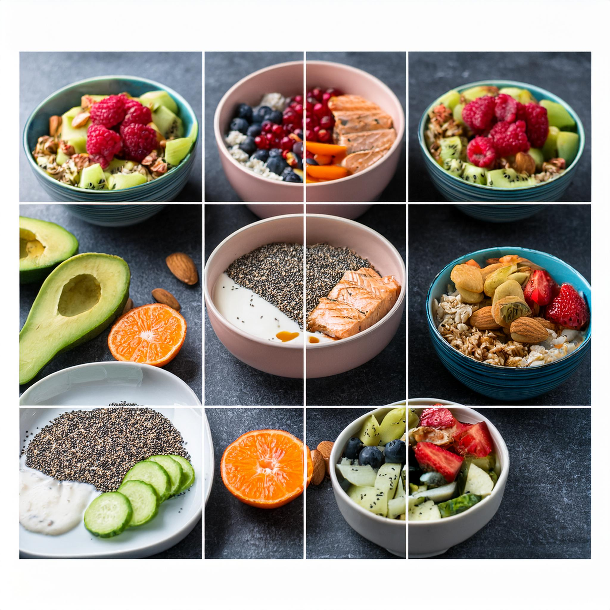

MEAL 3

Meal Plan 3:
-
Breakfast: Egg white omelet with spinach, tomatoes, and feta cheese, served with a side of berries.
-
Snack: Protein shake made with almond milk and banana.
-
Lunch: Grilled chicken breast with roasted sweet potato and sautéed kale.
-
Snack: Smoothie made with spinach, banana, almond milk, and protein powder.
-
Snack: Apple slices with almond butter.
- Dinner: Grilled steak with roasted asparagus and a side salad.
Grilled Steak With asparagus Recipe:
-
Season the ribeye steaks with Fire and Flavor’s beef rub or you can use salt, pepper, and garlic powder.
-
Let the steaks come up to room temperature and get your charcoal grill nice and hot.
-
Throw in a handful of pecan wood chips and grill directly over the charcoal, flipping occasionally to
get a nice sear on both sides.
-
If the steaks are thin, continue flipping back and forth until the steak reaches 130°F (For medium rare)
-
If the steaks are thicker, finish on indirect heat until your desired temperature then remove
- Rest the steaks for 10 minutes
- While the steaks are resting, coat the asparagus with olive oil and season with the same seasoning you
used for the steaks. Then grill directly over charcoal until they are cooked through. (About 10 minutes)
- Top the asparagus with a little shredded parmesan cheese, some freshly squeezed lemon juice and a few
cracks of black pepper.
- Slice your ribeye steaks against the grain and enjoy
Go Back